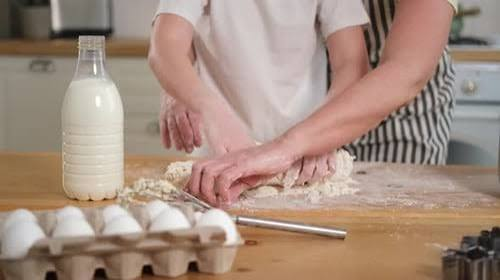
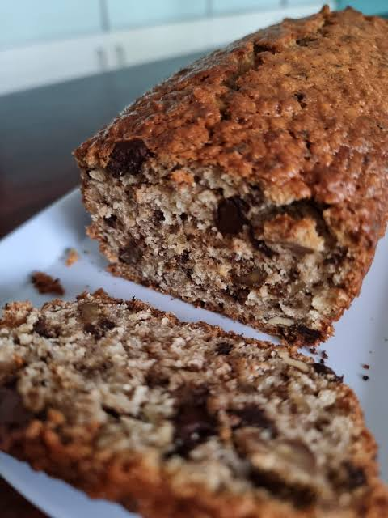

La cocina interpela más allá de la comida. Cuenta momentos, personas y recuerdos. Es por ello que quería recopilar mis recetas en un lugar que perdure en el tiempo y las generaciones.
Mi recetario: una recopilación de recetas de mi vida.

¿Qué podés encontrar en nuestra página?
- Recetas dulces como tortas, tartas, cookies y delicias.
- Recetas saladas para ideas de almuerzos y cenas.
- Básicos de la cocina, como las masas más claves y rellenos multiusos.
- Un apartado para aquellos como mi mamá, que siempre buscan la alternativa saludable.
Recetas destacadas

Tarta de frutilla
Ver receta
Bondiola al horno
Ver receta
Budín de banana
Ver receta